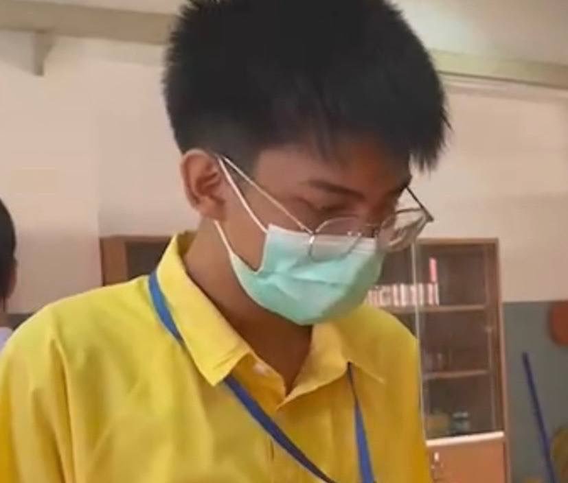

------ข้อมูลของฉัน------
ชื่อ:นาย ชิษณุชา ทนศิริ
ชื่อเล่น:คราม/ฟาน
อายุ:18 ปี
คณะ:วิทยาศาสตร์และเทคโนโลยี
สาขา:วิทยาการคอมพิวเตอร์
มหาวิทยาลัย:ธรรมศาสตร์
นายชิษณุชา ทนศิริ ชื่อเล่นชื่อคราม ชื่อเล่นเดิมชื่อฟาน
จบชั้นมัธยมศึกษาตอนปลายจากโรงเรียนวัดป่าประดู่ จังหวัดระยอง
ปัจจุบันเป็นนักศึกษาสาขาวิชาวิทยาการคอมพิวเตอร์ คณะวิทยาศาสตร์และเทคโนโลยี มหาวิทยาลัยธรรมศาสตร์ เป็นคนที่หลงรักธรรมชาติ ชอบสัตว์ฟันแทะทุกชนิดโดย
เฉพาะกระรอก ชอบการเขียนเว็บไซต์มากที่สุด ปัจจุบันมีผลงานเว็บสรุปความรู้วิชาต่างๆ
ที่มี Flip Book ที่ออกแบบด้วยตัวเอง แต่ยังอยู่ในขั้นตอนการพัฒนาอยู่ E-BOOK
Nice to meet you!!
------------------------